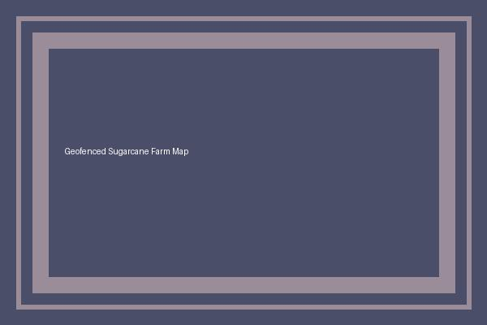

Interactive Farm Location Map
Click on any plot region on the map image below to view its specific crop and irrigation note in the advisory page.

Plot Guide & Region Legend
- Plot A (Top-Left Zone): Sugarcane germination zone with steady micro-irrigation needs.
- Plot B (Top-Right Zone): Young vegetative canopy section with light watering and moisture retention checks.
- Plot C (Lower Grand-Growth Block): Heavy water demand zone with early-morning deep-drip irrigation.